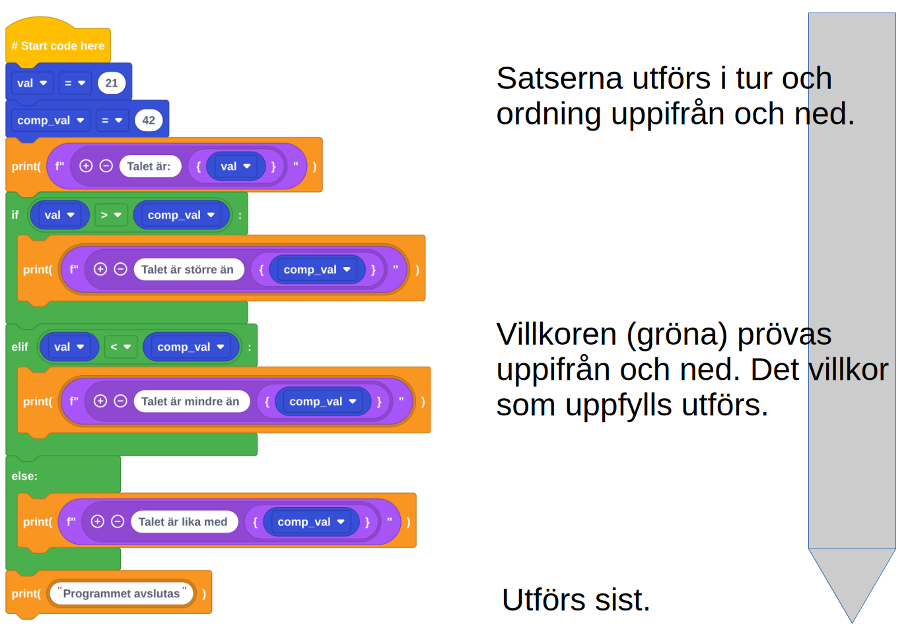

EduBlocks

Sammanfattningsvis kan man säga att ett datorprogram är en samling av instruktioner skrivna i programmeringsspråk, vilket ger möjlighet att styra hur en dators hårdvara fungerar och får den att utföra specifika uppgifter.
En variabel är ett “namn” på ett värde. Detta värde kan uppdateras.
“Tänk på ett tal”
“Dubbla det”
“Lägg till 5 till resultatet”
x = 5
x = 2 * x
x = x + 5
Nu har x värdet 15.
Några vanliga typer av variabler är int (heltal), float (tal med decimaler) och string (sträng, text).
Stränginnehållet måste omgärdas av citationstecken! ("...") Python är ett löst typat språk; variabler kan byta typ under körning.
När en variabel tilldelas ett värde kommer detta värde att sparas på en plats i datorns minne. När variabeln adresseras kommer namnet att hänvisa till denna minnesplats.
score
speed
name
...
42
5.2
"Alice"
...
speed = 42 och Speed = 42 är olika)price respektive name)first_name = "Alice"namn, ålder, styrka, intresse_1 och intresse_2Exempel (variabelvärden i gult)
Skapa mappen Programmering, som ska ligga under Dokument på din dator (här ska du organisera dina filer under kursen).
Ladda ned och installera Pythonmiljön Thonny från https://thonny.org/
Kopiera koden som skapades från den föregående “block-övningen” till ett dokument i Thonny och kör den.
Kunna definiera ett datorprogram
Känna till vad en variabel är, hur de bör namnges och känna till några olika typer av dessa
Kunna skriva ut strängar och tal från variabler i EduBlocks